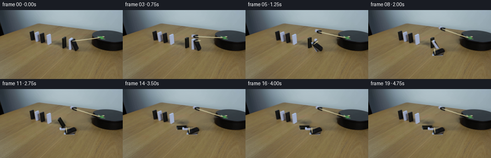
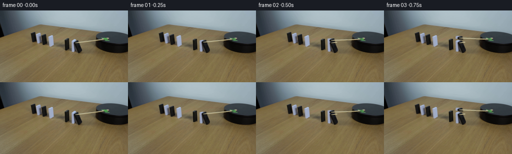
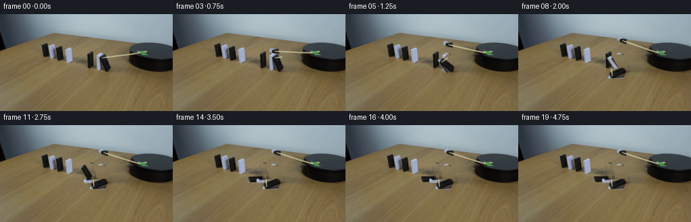
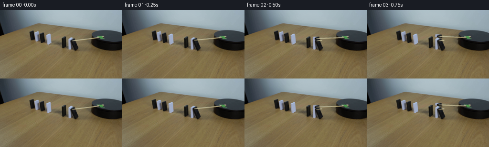

CODING AGENTS AS PIXEL WORLD MODELS
traex/GPT-5.6-Sol · 0051
点击播放 · 原生 RGB 像素
逐轮保存的候选
回放视频、检查图与代码变化。
每份候选均可单独播放。实际图片检查记录在下方工具轨迹中。
候选 01播放与检查图
点击播放 · 原生 RGB 像素


展开代码变化
--- 上一保存版本
+++ 本次保存版本
@@ -0,0 +1,154 @@
+"""Generate the requested fixed-camera domino demonstration from first_frame.png.
+
+The animation deliberately edits only the moving apparatus. Source-image
+cutouts retain the original lighting, perspective, noise, and material detail;
+small analytic shadows anchor the rotated pieces to the table.
+"""
+from pathlib import Path
+import math
+import cv2
+import numpy as np
+from PIL import Image, ImageDraw, ImageFilter
+import artifact_io
+
+CASE_DIR = Path(__file__).resolve().parent
+W, H = 256, 144
+
+
+def polygon_mask(points, blur=0.45):
+ """Antialiased full-frame polygon alpha."""
+ scale = 4
+ m = Image.new("L", (W * scale, H * scale), 0)
+ ImageDraw.Draw(m).polygon([(round(x*scale), round(y*scale)) for x,y in points], fill=255)
+ m = m.resize((W, H), Image.Resampling.LANCZOS)
+ if blur:
+ m = m.filter(ImageFilter.GaussianBlur(blur))
+ return np.asarray(m, dtype=np.uint8)
+
+
+def alpha_over(dst, rgb, alpha):
+ a = alpha.astype(np.float32)[..., None] / 255.0
+ return np.clip(dst.astype(np.float32)*(1-a) + rgb.astype(np.float32)*a, 0, 255).astype(np.uint8)
+
+
+def rotate_layer(rgb, alpha, pivot, degrees):
+ # OpenCV positive degrees gives a visual counterclockwise transform. This
+ # is exactly the direction in which an upright piece falls to image-left.
+ M = cv2.getRotationMatrix2D(tuple(map(float, pivot)), float(degrees), 1.0)
+ rr = cv2.warpAffine(rgb, M, (W,H), flags=cv2.INTER_CUBIC,
+ borderMode=cv2.BORDER_CONSTANT, borderValue=(0,0,0))
+ aa = cv2.warpAffine(alpha, M, (W,H), flags=cv2.INTER_CUBIC,
+ borderMode=cv2.BORDER_CONSTANT, borderValue=0)
+ return rr, aa
+
+
+def rotate_clockwise_screen(rgb, alpha, pivot, degrees):
+ # cv2's positive angle is visually counterclockwise. Negative therefore
+ # provides a literal clockwise sweep in image coordinates.
+ M = cv2.getRotationMatrix2D(tuple(map(float, pivot)), -float(degrees), 1.0)
+ rr = cv2.warpAffine(rgb, M, (W,H), flags=cv2.INTER_CUBIC,
+ borderMode=cv2.BORDER_CONSTANT, borderValue=(0,0,0))
+ aa = cv2.warpAffine(alpha, M, (W,H), flags=cv2.INTER_CUBIC,
+ borderMode=cv2.BORDER_CONSTANT, borderValue=0)
+ return rr, aa
+
+
+def smoothstep(x):
+ x = min(1.0, max(0.0, x))
+ return x*x*(3.0-2.0*x)
+
+
+def fall_angle(frame, start, duration=4.6):
+ """Accelerating toppling with a tiny, damped landing bounce."""
+ q = (frame-start)/duration
+ if q <= 0: return 0.0
+ if q < 1:
+ # gravity-like slow release, then fast fall
+ return 88.0 * smoothstep(q)**1.18
+ age = frame-(start+duration)
+ if age < 2.2:
+ return 88.0 + 2.2*math.exp(-1.35*age)*math.sin(age*math.pi)
+ return 88.0
+
+
+def shadow_layer(frame, pieces, angles):
+ """Soft contact shadows cast toward lower-right on the wood."""
+ sh = Image.new("L", (W,H), 0)
+ d = ImageDraw.Draw(sh)
+ for (_, _, pivot, _), ang in zip(pieces, angles):
+ if ang < 1: continue
+ # As the tile approaches the tabletop its broad projected shadow grows.
+ reach = 4 + 12*math.sin(math.radians(min(88,ang)))
+ px, py = pivot
+ d.ellipse((px-reach-1, py-2, px+5, py+3.5), fill=int(35+55*math.sin(math.radians(ang))))
+ return np.asarray(sh.filter(ImageFilter.GaussianBlur(2.1)), dtype=np.uint8)
+
+
+def main():
+ src = np.asarray(Image.open(CASE_DIR/'first_frame.png').convert('RGB'), dtype=np.uint8)
+ assert src.shape == (H,W,3)
+
+ # Three overlapping perspective cutouts form the row nearest the platform.
+ # They are listed in back-to-front source compositing order. Their lower
+ # edges are the physical hinge lines on the tabletop.
+ piece_defs = [
+ ([(129,56),(138,57),(139,79),(130,80)], (134.5,79.3), 9),
+ ([(142,59),(149,60),(150,83),(143,82)], (146.5,82.1), 6),
+ ([(148,59),(162,62),(164,84),(154,86),(148,81)], (158.5,84.1), 3),
+ ]
+ pieces=[]
+ for poly,pivot,start in piece_defs:
+ a=polygon_mask(poly, .32)
+ pieces.append((src.copy(),a,pivot,start))
+
+ # The thin wooden actuator projects leftward from the black platform.
+ # Its mask excludes most of the dark hub/platform so those remain fixed.
+ stick_poly=[(143,62),(202,54),(210,56),(207,61),(151,68),(143,67)]
+ stick_alpha=polygon_mask(stick_poly,.38)
+
+ # Build a clean plate only beneath moving cutouts. The expanded inpaint
+ # area removes dark edge halos, while original cutouts are composited back
+ # for any pieces that have not begun moving.
+ remove=np.zeros((H,W),np.uint8)
+ for _,a,_,_ in pieces: remove=np.maximum(remove,(a>20).astype(np.uint8)*255)
+ remove=np.maximum(remove,(stick_alpha>20).astype(np.uint8)*255)
+ kernel=cv2.getStructuringElement(cv2.MORPH_ELLIPSE,(5,5))
+ remove=cv2.dilate(remove,kernel,iterations=1)
+ clean=cv2.inpaint(src,remove,4.0,cv2.INPAINT_TELEA)
+
+ frames=[src.copy()]
+ for f in range(1,20):
+ # Keep every non-apparatus pixel source-identical for a locked camera.
+ out=clean.copy()
+ angles=[fall_angle(f,p[3]) for p in pieces]
+
+ # Add soft moving shadows before the objects. Existing source shadows
+ # outside the compact cleanup area remain as subtle ambient occlusion.
+ sa=shadow_layer(f,pieces,angles)
+ shadow_rgb=np.zeros_like(out)
+ out=alpha_over(out,shadow_rgb,sa)
+
+ # Rear domino first and front domino last preserves overlap cues.
+ for (rgb,a,pivot,start),ang in zip(pieces,angles):
+ rr,aa=rotate_layer(rgb,a,pivot,ang)
+ out=alpha_over(out,rr,aa)
+
+ # Smooth clockwise motor motion: fast initial sweep, slight elastic
+ # settling after contact. The restrained 25-degree arc remains within
+ # the realistic range of the visible benchtop mechanism.
+ if f <= 7:
+ stick_ang=25.0*smoothstep(f/7.0)
+ else:
+ t=f-7
+ stick_ang=25.0 + 2.0*math.exp(-.38*t)*math.sin(1.45*t)
+ rr,aa=rotate_clockwise_screen(src,stick_alpha,(207.0,58.0),stick_ang)
+ out=alpha_over(out,rr,aa)
+
+ frames.append(out)
+
+ arr=np.stack(frames).astype(np.uint8)
+ assert np.array_equal(arr[0],src)
+ artifact_io.save(arr,CASE_DIR)
+
+if __name__ == '__main__':
+ main()
候选 02播放与检查图
点击播放 · 原生 RGB 像素


展开代码变化
--- 上一保存版本
+++ 本次保存版本
@@ -28,7 +28,7 @@
def alpha_over(dst, rgb, alpha):
a = alpha.astype(np.float32)[..., None] / 255.0
- return np.clip(dst.astype(np.float32)*(1-a) + rgb.astype(np.float32)*a, 0, 255).astype(np.uint8)
+ return np.rint(np.clip(dst.astype(np.float32)*(1-a) + rgb.astype(np.float32)*a, 0, 255)).astype(np.uint8)
def rotate_layer(rgb, alpha, pivot, degrees):
@@ -119,8 +119,20 @@
frames=[src.copy()]
for f in range(1,20):
# Keep every non-apparatus pixel source-identical for a locked camera.
- out=clean.copy()
+ # Begin with the exact source and reveal the clean plate only under
+ # source footprints that have actually started to move. This avoids
+ # even a one-pixel stationary-edge discontinuity after frame zero.
+ out=src.copy()
angles=[fall_angle(f,p[3]) for p in pieces]
+
+ reveal=np.zeros((H,W),np.uint8)
+ # The actuator moves immediately. Its original footprint must expose
+ # tabletop as the rotated cutout leaves it.
+ reveal=np.maximum(reveal,stick_alpha)
+ for (_,a,_,start),ang in zip(pieces,angles):
+ if ang > 0:
+ reveal=np.maximum(reveal,a)
+ out=alpha_over(out,clean,reveal)
# Add soft moving shadows before the objects. Existing source shadows
# outside the compact cleanup area remain as subtle ambient occlusion.
@@ -130,6 +142,9 @@
# Rear domino first and front domino last preserves overlap cues.
for (rgb,a,pivot,start),ang in zip(pieces,angles):
+ # Reapplying a stationary source cutout is pixel-neutral but also
+ # correctly restores it if an overlapping foreground footprint
+ # was cleaned away.
rr,aa=rotate_layer(rgb,a,pivot,ang)
out=alpha_over(out,rr,aa)
可观测工具轨迹
实际执行的命令与返回图片。
命令 1exit 0
/bin/bash -lc "cat GENERATION_RULES.md && printf '\\n--- PROMPT ---\\n' && cat prompt.txt"
命令 2exit 0
/bin/bash -lc "find . -maxdepth 2 -type f -printf '%p %s bytes\\n' | sort && printf '\\nTools:\\n' && command -v ffmpeg || true && command -v python3 || true"
命令 3exit 0
/bin/bash -lc "sed -n '1,240p' artifact_io.py"
命令 4exit 0
/bin/bash -lc "python3 - <<'PY'
from PIL import Image
import numpy as np
im=np.array(Image.open('first_frame.png').convert('RGB'))
print(im.shape, im.dtype, im.min(), im.max(), im.mean((0,1)))
# dominant quantized colors
q=(im//16)*16
u,c=np.unique(q.reshape(-1,3),axis=0,return_counts=True)
for i in np.argsort(c)[-25:][::-1]: print(u[i],c[i])
# row/column mean and std every 8
print('rows mean/std')
for y in range(0,144,8): print(y, np.round(im[y:y+8].mean((0,1)),1), round(float(im[y:y+8].std()),1))
PY"命令 5exit 0
/bin/bash -lc "cat > .tmp/analyze.py <<'PY'
from PIL import Image
import numpy as np
from collections import deque
im=np.array(Image.open('first_frame.png').convert('RGB'))
h,w,_=im.shape
# component utility 8 connected
def comps(mask,n=50):
import cv2
num, lab, stats, cent=cv2.connectedComponentsWithStats(mask.astype('uint8'),8)
out=[]
for i in range(1,num):
x,y,ww,hh,a=stats[i];
if a>=n: out.append((a,(x,y,ww,hh),tuple(np.round(cent[i],1))))
return sorted(out,reverse=True)
R,G,B=im.transpose(2,0,1)
V=im.max(2); mn=im.min(2)
masks={
'dark':(V<55),'blackish':(V<85)&(mn<35),'neutral_dark':(V<100)&((im.max(2)-im.min(2))<25),
'bright_neutral':(mn>130)&((im.max(2)-im.min(2))<38),
'white':(mn>175)&((im.max(2)-im.min(2))<30),
'woodstick':(R>100)&(R>G*1.15)&(G>B*1.25),
}
for name,m in masks.items():
print('\\n',name,'pixels',m.sum())
for a,bb,c in comps(m,10)[:30]:print(a,bb,c)
# tile stats 8x8: print darkness fraction / bright neutral fraction for upper 96
for name,m in [('D',masks['dark']),('N',masks['neutral_dark']),('W',masks['bright_neutral'])]:
print('\\nMAP',name)
for y in range(0,112,4):
s=''
for x in range(0,256,4):
f=m[y:y+4,x:x+4].mean()
s += ' ' if f<.08 else '.' if f<.25 else ':' if f<.5 else 'O' if f<.75 else '#'
print(f'{y:03d} '+s)
# gradients components top 110
import cv2
g=cv2.cvtColor(im,cv2.COLOR_RGB2GRAY)
grad=np.hypot(cv2.Sobel(g,cv2.CV_32F,1,0),cv2.Sobel(g,cv2.CV_32F,0,1))
print('\\ngrad percentiles',np.percentile(grad,[50,75,90,95,98,99]))
PY
python3 .tmp/analyze.py"命令 6exit 0
/bin/bash -lc "python3 - <<'PY'
from PIL import Image
import numpy as np, cv2
im=np.array(Image.open('first_frame.png').convert('RGB')); gray=cv2.cvtColor(im,cv2.COLOR_RGB2GRAY)
# Summaries every x 45-190 in candidate y range: min,max, neutral frac, edge totals
for x in range(45,191):
p=im[40:90,x]; gr=gray[40:90,x]
dark=((p.max(1)<90)&((p.max(1)-p.min(1))<35)).sum(); bright=((p.min(1)>125)&((p.max(1)-p.min(1))<45)).sum()
edge=np.abs(np.diff(gr.astype(int))).sum()
if dark>=4 or bright>=4 or edge>180:
print(f'{x:3d} d{dark:02d} b{bright:02d} e{edge:03d} range{gr.min():03d}-{gr.max():03d}')
print('\\nRuns by row: B=dark W=bright t=tableish, -=other')
for y in range(38,90,2):
s=''
for x in range(40,201,2):
p=im[y:y+2,x:x+2].mean((0,1)); mx=p.max(); mi=p.min()
if mx<75:s+='B'
elif mi>130 and mx-mi<45:s+='W'
elif p[0]>p[1]*1.12 and p[1]>p[2]*1.18:s+='t'
elif mx-mi<35:s+='n'
else:s+='.'
print(f'{y:02d} {s}')
# color samples at expected object centers
for xy in [(155,70),(145,70),(134,68),(122,65),(111,62),(101,62),(88,58),(75,56),(67,53),(170,50),(190,55),(200,60),(220,60),(155,85),(155,90)]:
x,y=xy; print(xy, im[y,x], 'local',np.round(im[y-1:y+2,x-1:x+2].mean((0,1))).astype(int))
PY"命令 7exit 0
/bin/bash -lc "python3 - <<'PY'
from PIL import Image
import numpy as np
im=np.array(Image.open('first_frame.png').convert('RGB'))
# classify region x145:202 y40:66 based color, output each pixel. W neutral bright, k black, b dark bluegray, T brown, r reddish wooden stick, g grey
for y in range(38,68):
s=''
for x in range(140,205):
r,g,b=map(int,im[y,x]); mx=max(r,g,b); mi=min(r,g,b)
if mx<45: c='#'
elif mx<85 and mx-mi<35:c='k'
elif mx<115 and mx-mi<35:c='n'
elif mi>140 and mx-mi<45:c='W'
elif b>r*1.08:c='B'
elif r>g*1.15 and g>b*1.22:c='t'
elif r>g*1.06 and g>b*1.08:c='r'
elif mx-mi<45:c='g'
else:c='.'
s+=c
print(f'{y:02d} {s}')
print('\\nRGB region stick likely every pixel x150-200 step2:')
for y in range(44,62,2):
print('y',y, ['%02x%02x%02x'%tuple(im[y,x]) for x in range(148,202,3)])
PY"命令 8exit 0
/bin/bash -lc "python3 - <<'PY'
from PIL import Image
import numpy as np
im=np.array(Image.open('first_frame.png').convert('RGB'))
for y in range(48,83):
s=''
for x in range(55,150):
r,g,b=map(int,im[y,x]); mx=max(r,g,b); mi=min(r,g,b)
if mx<45:c='#'
elif mx<80 and mx-mi<28:c='k'
elif mx<115 and mx-mi<28:c='n'
elif mi>135 and mx-mi<48:c='W'
elif b>r*1.08:c='B'
elif r>g*1.15 and g>b*1.22:c='t'
elif r>g*1.06 and g>b*1.08:c='r'
elif mx-mi<45:c='g'
else:c='.'
s+=c
print(f'{y:02d} {s}')
PY"命令 9exit 0
/bin/bash -lc "python3 - <<'PY'
import cv2, numpy as np
from PIL import Image
im=np.array(Image.open('first_frame.png').convert('RGB')); g=cv2.cvtColor(im,cv2.COLOR_RGB2GRAY)
lines=cv2.HoughLinesP(cv2.Canny(g,60,140),1,np.pi/180,threshold=15,minLineLength=8,maxLineGap=3)
for l in lines[:,0]:
x1,y1,x2,y2=map(int,l); cx=(x1+x2)//2; cy=(y1+y2)//2
if 35<cy<90:
print((x1,y1,x2,y2),'len',round(np.hypot(x2-x1,y2-y1),1),'ang',round(np.degrees(np.arctan2(y2-y1,x2-x1)),1))
PY"命令 10exit 0
/bin/bash -lc "cat > generate.py <<'PY'
\"\"\"Generate the requested fixed-camera domino demonstration from first_frame.png.
The animation deliberately edits only the moving apparatus. Source-image
cutouts retain the original lighting, perspective, noise, and material detail;
small analytic shadows anchor the rotated pieces to the table.
\"\"\"
from pathlib import Path
import math
import cv2
import numpy as np
from PIL import Image, ImageDraw, ImageFilter
import artifact_io
CASE_DIR = Path(__file__).resolve().parent
W, H = 256, 144
def polygon_mask(points, blur=0.45):
\"\"\"Antialiased full-frame polygon alpha.\"\"\"
scale = 4
m = Image.new(\"L\", (W * scale, H * scale), 0)
ImageDraw.Draw(m).polygon([(round(x*scale), round(y*scale)) for x,y in points], fill=255)
m = m.resize((W, H), Image.Resampling.LANCZOS)
if blur:
m = m.filter(ImageFilter.GaussianBlur(blur))
return np.asarray(m, dtype=np.uint8)
def alpha_over(dst, rgb, alpha):
a = alpha.astype(np.float32)[..., None] / 255.0
return np.clip(dst.astype(np.float32)*(1-a) + rgb.astype(np.float32)*a, 0, 255).astype(np.uint8)
def rotate_layer(rgb, alpha, pivot, degrees):
# OpenCV positive degrees gives a visual counterclockwise transform. This
# is exactly the direction in which an upright piece falls to image-left.
M = cv2.getRotationMatrix2D(tuple(map(float, pivot)), float(degrees), 1.0)
rr = cv2.warpAffine(rgb, M, (W,H), flags=cv2.INTER_CUBIC,
borderMode=cv2.BORDER_CONSTANT, borderValue=(0,0,0))
aa = cv2.warpAffine(alpha, M, (W,H), flags=cv2.INTER_CUBIC,
borderMode=cv2.BORDER_CONSTANT, borderValue=0)
return rr, aa
def rotate_clockwise_screen(rgb, alpha, pivot, degrees):
# cv2's positive angle is visually counterclockwise. Negative therefore
# provides a literal clockwise sweep in image coordinates.
M = cv2.getRotationMatrix2D(tuple(map(float, pivot)), -float(degrees), 1.0)
rr = cv2.warpAffine(rgb, M, (W,H), flags=cv2.INTER_CUBIC,
borderMode=cv2.BORDER_CONSTANT, borderValue=(0,0,0))
aa = cv2.warpAffine(alpha, M, (W,H), flags=cv2.INTER_CUBIC,
borderMode=cv2.BORDER_CONSTANT, borderValue=0)
return rr, aa
def smoothstep(x):
x = min(1.0, max(0.0, x))
return x*x*(3.0-2.0*x)
def fall_angle(frame, start, duration=4.6):
\"\"\"Accelerating toppling with a tiny, damped landing bounce.\"\"\"
q = (frame-start)/duration
if q <= 0: return 0.0
if q < 1:
# gravity-like slow release, then fast fall
return 88.0 * smoothstep(q)**1.18
age = frame-(start+duration)
if age < 2.2:
return 88.0 + 2.2*math.exp(-1.35*age)*math.sin(age*math.pi)
return 88.0
def shadow_layer(frame, pieces, angles):
\"\"\"Soft contact shadows cast toward lower-right on the wood.\"\"\"
sh = Image.new(\"L\", (W,H), 0)
d = ImageDraw.Draw(sh)
for (_, _, pivot, _), ang in zip(pieces, angles):
if ang < 1: continue
# As the tile approaches the tabletop its broad projected shadow grows.
reach = 4 + 12*math.sin(math.radians(min(88,ang)))
px, py = pivot
d.ellipse((px-reach-1, py-2, px+5, py+3.5), fill=int(35+55*math.sin(math.radians(ang))))
return np.asarray(sh.filter(ImageFilter.GaussianBlur(2.1)), dtype=np.uint8)
def main():
src = np.asarray(Image.open(CASE_DIR/'first_frame.png').convert('RGB'), dtype=np.uint8)
assert src.shape == (H,W,3)
# Three overlapping perspective cutouts form the row nearest the platform.
# They are listed in back-to-front source compositing order. Their lower
# edges are the physical hinge lines on the tabletop.
piece_defs = [
([(129,56),(138,57),(139,79),(130,80)], (134.5,79.3), 9),
([(142,59),(149,60),(150,83),(143,82)], (146.5,82.1), 6),
([(148,59),(162,62),(164,84),(154,86),(148,81)], (158.5,84.1), 3),
]
pieces=[]
for poly,pivot,start in piece_defs:
a=polygon_mask(poly, .32)
pieces.append((src.copy(),a,pivot,start))
# The thin wooden actuator projects leftward from the black platform.
# Its mask excludes most of the dark hub/platform so those remain fixed.
stick_poly=[(143,62),(202,54),(210,56),(207,61),(151,68),(143,67)]
stick_alpha=polygon_mask(stick_poly,.38)
# Build a clean plate only beneath moving cutouts. The expanded inpaint
# area removes dark edge halos, while original cutouts are composited back
# for any pieces that have not begun moving.
remove=np.zeros((H,W),np.uint8)
for _,a,_,_ in pieces: remove=np.maximum(remove,(a>20).astype(np.uint8)*255)
remove=np.maximum(remove,(stick_alpha>20).astype(np.uint8)*255)
kernel=cv2.getStructuringElement(cv2.MORPH_ELLIPSE,(5,5))
remove=cv2.dilate(remove,kernel,iterations=1)
clean=cv2.inpaint(src,remove,4.0,cv2.INPAINT_TELEA)
frames=[src.copy()]
for f in range(1,20):
# Keep every non-apparatus pixel source-identical for a locked camera.
out=clean.copy()
angles=[fall_angle(f,p[3]) for p in pieces]
# Add soft moving shadows before the objects. Existing source shadows
# outside the compact cleanup area remain as subtle ambient occlusion.
sa=shadow_layer(f,pieces,angles)
shadow_rgb=np.zeros_like(out)
out=alpha_over(out,shadow_rgb,sa)
# Rear domino first and front domino last preserves overlap cues.
for (rgb,a,pivot,start),ang in zip(pieces,angles):
rr,aa=rotate_layer(rgb,a,pivot,ang)
out=alpha_over(out,rr,aa)
# Smooth clockwise motor motion: fast initial sweep, slight elastic
# settling after contact. The restrained 25-degree arc remains within
# the realistic range of the visible benchtop mechanism.
if f <= 7:
stick_ang=25.0*smoothstep(f/7.0)
else:
t=f-7
stick_ang=25.0 + 2.0*math.exp(-.38*t)*math.sin(1.45*t)
rr,aa=rotate_clockwise_screen(src,stick_alpha,(207.0,58.0),stick_ang)
out=alpha_over(out,rr,aa)
frames.append(out)
arr=np.stack(frames).astype(np.uint8)
assert np.array_equal(arr[0],src)
artifact_io.save(arr,CASE_DIR)
if __name__ == '__main__':
main()
PY
python3 generate.py
python3 - <<'PY'
import numpy as np
from PIL import Image
z=np.load('pixels.npz')['pixels']
print('pixels tensor',z.shape,z.dtype)
ims=[np.array(Image.open(f'frames/{i:02d}.png')) for i in range(20)]
print('first exact',np.array_equal(ims[0],np.array(Image.open('first_frame.png').convert('RGB'))))
for i in range(1,20):
d=np.any(ims[i]"'!=ims[i-1],2)
ys,xs=np.where(d)
print(i,'"'changed',d.sum(),'bbox', (xs.min(),ys.min(),xs.max(),ys.max()) if len(xs) else None,'mean delta',np.abs(ims[i].astype(int)-ims[i-1].astype(int)).mean().round(3))
PY"命令 11exit 0
/bin/bash -lc "python3 generate.py && python3 - <<'PY'
from PIL import Image
import numpy as np, json, os
src=np.array(Image.open('first_frame.png').convert('RGB'))
fr=np.stack([np.array(Image.open(f'frames/{i:02d}.png').convert('RGB')) for i in range(20)])
assert fr.shape==(20,144,256,3) and fr.dtype==np.uint8
assert np.array_equal(fr[0],src)
# ensure locked-camera edit locality and meaningful temporal motion
union=np.any(fr"'!=src[None],axis=(0,3)); ys,xs=np.where(union)
print('"'validated',fr.shape,fr.dtype,'first exact',np.array_equal(fr[0],src))
print('all-motion bbox', (int(xs.min()),int(ys.min()),int(xs.max()),int(ys.max())), 'union px',int(union.sum()))
print('changed-vs-source:',[int(np.any(f"'!=src,2).sum()) for f in fr])
print('"'files',[(p,os.path.getsize(p)) for p in ['pixels.npz','inspection.png','transition_check.png','index.html']])
PY
python3 -m py_compile generate.py
find frames -type f | wc -l"保存候选 2 份；完成命令 11 次；可验证图片返回 0 张。原始 API 响应与完整日志保留在本地。